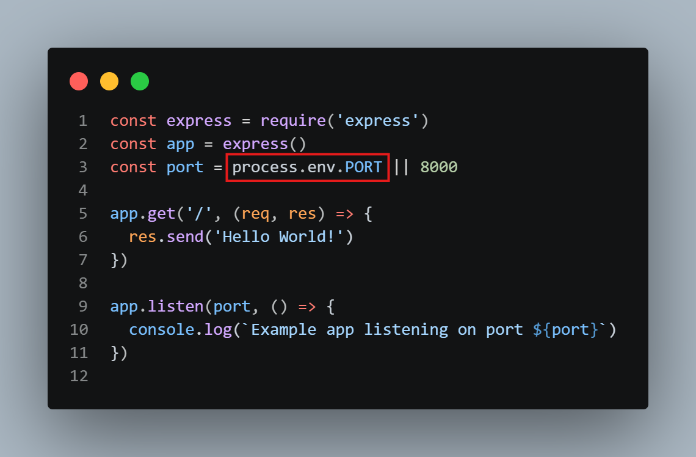
6.nodemon (it is used so that we donot repeatedly close and open te server everytime we do a change) ---> install using npm install -g nodemon (this is global so installing it once is enough for each pc) 7. To run the server use nodemon index.js 8.We can create data/api using this server and use this localhost in other folders while it's running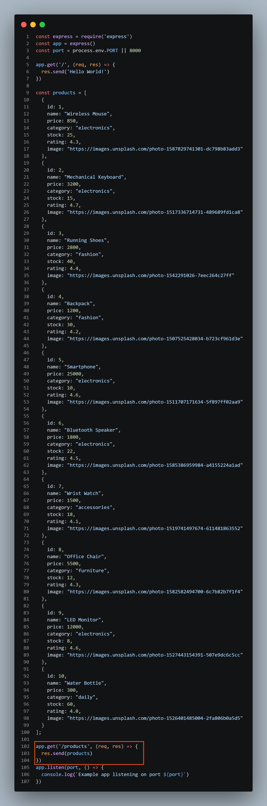
For POST --- posting might be a problem so install cors using npm install cors on the SERVER SIDE which can be got from express js ---> resources -->middleware In index.js of server folder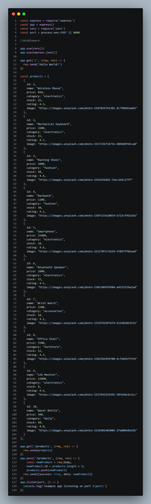
In client folder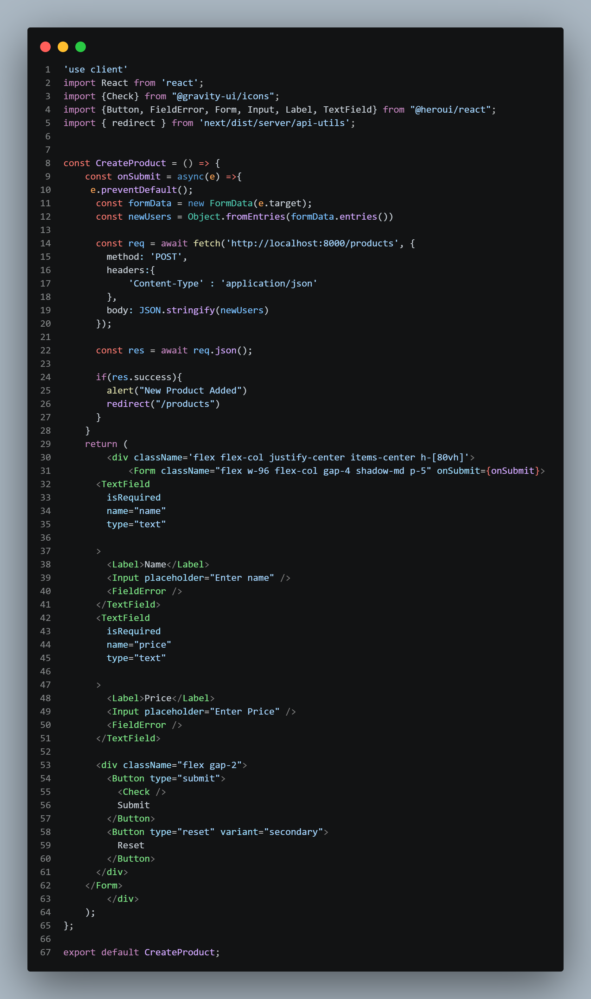
TO ADD MONGODB--- 1.Make the express server (1 to 7 step of server side) 2.Go to MongoDB atlat ---> cluster --->connect ----> driver ----> select view full code (make sure mongodb is installed) and paste it like this--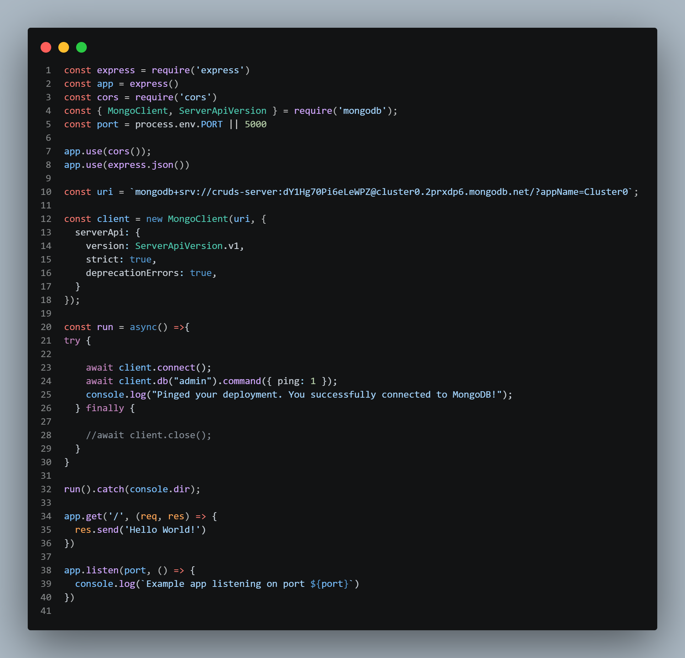
3.Go to browse collection, click on the + on the cluster then add data ---> get json format mongobd data/api from chatgpt or gemini and paste there then insert 4. according mongodb doc ---> client libraries ---> node.js ----> select js ---->CRUD operations ---> query documents ----> find documents 5.Then we must ---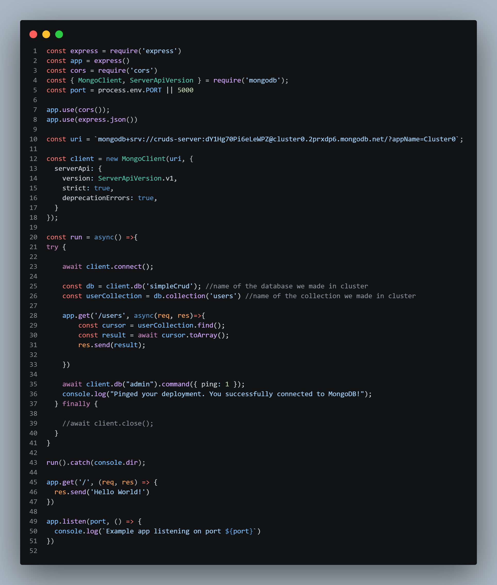
On the Client Side, For GET-ting API we need to make a lib folder in app and inside the lib folder make data.js file--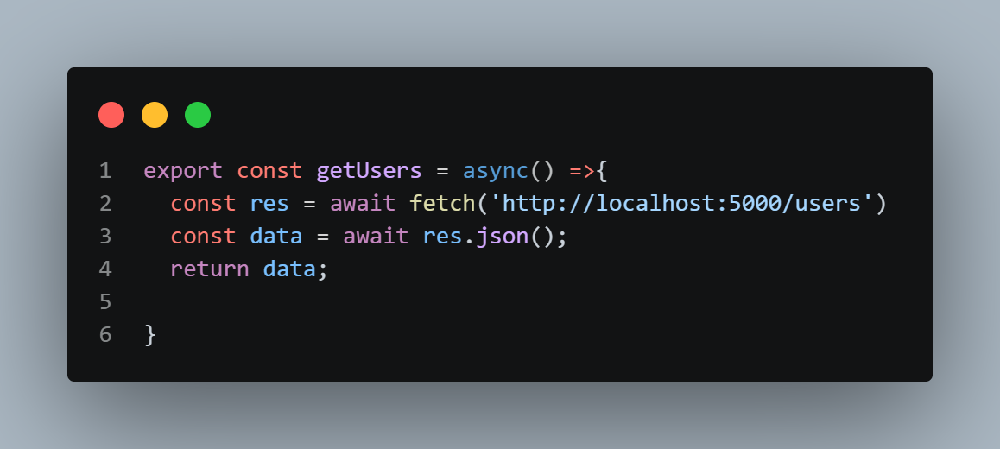
Then we can use it any route like this---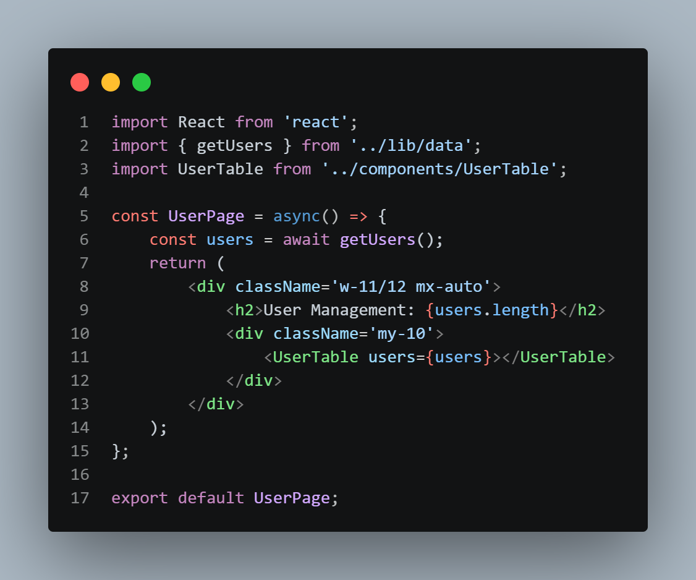
User Details: To get user Details as usual we will create a [userId] folder in user folder. And in that [userid] folder's page.jsx we will use params. Now, in data.js---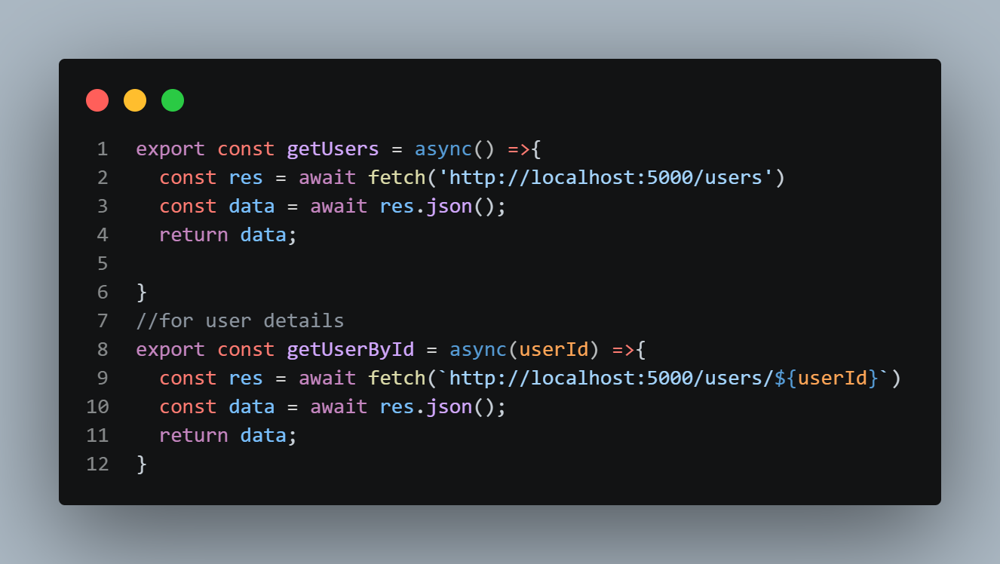
In Server side's index.js have these---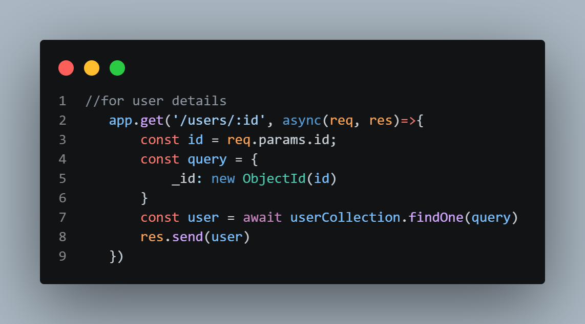
User Delete: In Server side's index.js have this ---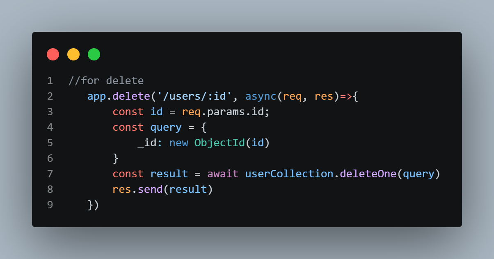